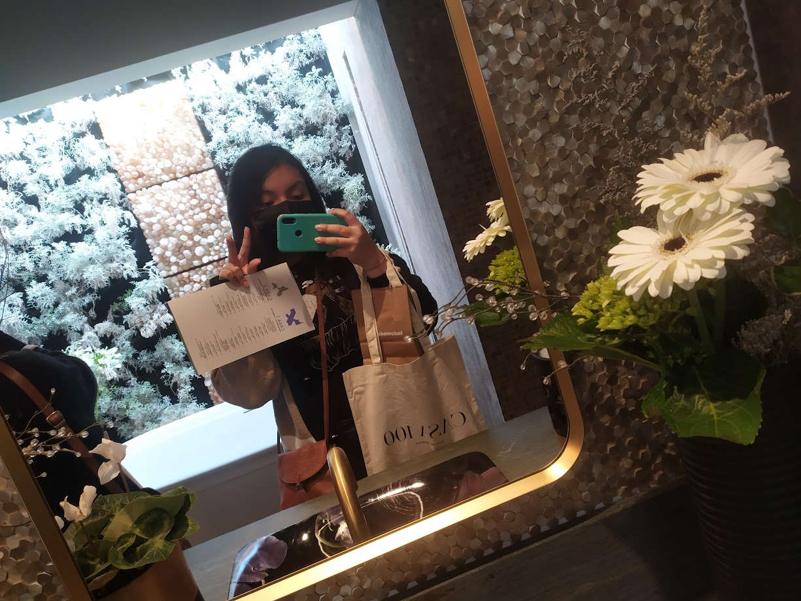
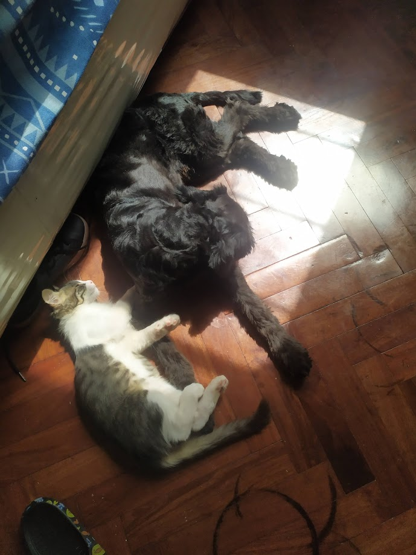

About me
Mi interés por el mundo del diseño se ha incrementado a medida que he tenido la oportunidad de practicarlo, especialmente en el ámbito del interiorismo.
Desde los primeros pasos de mi carrera, me he dedicado a estudiar y perfeccionarme en diversos programas de diseño, desde herramientas de dibujo en 2D como AutoCAD, hasta aplicaciones de modelado en 3D como Revit, SketchUp y 3ds Max. Además, para potenciar al máximo mis proyectos, utilizo programas de renderizado como Enscape, V-Ray y Lumion.
En este momento, me encuentro comprometido en llevar mis proyectos al siguiente nivel, tanto en términos de diseño como en su concepción conceptual.
Además, dentro de mi formación profesional, cuento con un dominio avanzado del inglés y certificaciones en diversos programas de diseño. Mi objetivo es fusionar todos mis conocimientos para desarrollar proyectos que no solo impacten en la sociedad, sino que también contribuyan a la evolución del mundo del diseño.
En mi vida personal, tengo dos mascotas que son como hijos para mi, se llaman Coco y Lio. Tienen una relación muy tóxica pero se aman.
